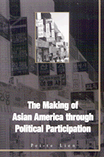

<body bgcolor="#FFFFFF" text="#000000" link="#0000FF" vlink="#CC0000" alink="#CC0000"><center><hr width="350" size="1" align="center" noshade>A fascinating look at how race ethnicity and transnationalism help construct a complex American electorate<hr width="350" size="1" align="center" noshade><p><a href="https://cdcshoppingcart.uchicago.edu/Cart/ChicagoBook.aspx?ISBN=9781566398947&&PRESS=temple" target="_top">Buy this book!</a> | <a href="https://cdcshoppingcart.uchicago.edu/Cart/Cart.aspx?PRESS=temple" target="_top">View Cart</a> | <a href="https://cdcshoppingcart.uchicago.edu/Cart/Cart.aspx?PRESS=temple" target="_top">Check Out</a></p><p></p></center><!--none//--><h1>The Making of Asian America through Political Participation</h1>
<h3>Pei-te Lien</h3>
<P>cloth 1-56639-894-0 $85.50, Sep 01, <FONT COLOR=#990033>Available</FONT>
<br>paper 1-56639-895-9 $31.95, Sep 01, <FONT COLOR=#990033>Available</FONT>
<br>Electronic Book 1-43990-543-6 $31.95 <FONT COLOR=#990033>Available</FONT>
<BR> 312 pp
6x9
21&nbsp;tables
</P><h3 align="center"><P><font color="#996633">Best Book published in the areas of Political Participation, Voting, Elections, and Political Behavior in Racial/Ethnic Politics from the American Political Science Association (APSA),
2002</font></P>
</H3>
<BLOCKQUOTE><I>"This book is essential reading for anyone interested in Asian American studies. Lien, one of the leading scholars in the field, offers a convincing argument that Asian American identity as been shaped through political participation. She has made a major contribution to the revision of the Asian American image."</I>
<br>&#151<b>Andrew L. Aoki</b>, Augsburg College, and co-editor of <I>Encyclopedia of Minorities in American Politics</I><I></I></BLOCKQUOTE>
<p>Asian Americans are widely believed to be passive and compliant participants in the U.S. political process&#151if they participate at all. In this ground-breaking book, Pei-te Lien maps the actions and strategies of Asian Americans as they negotiate a space in the American political arena.
<p>Professor Lien looks at political participation by Asian Americans prior to 1965 and then examines, at both organizational and mass politics levels, how race, ethnicity, and transnationalism help to construct a complex American electorate. She looks not only at rates of participation among Asian Americans as compared with blacks, Latinos, American Indians, and non-Hispanic whites, but also among specific groups of Asian Americans&#151Chinese, Japanese, Filipinos, Koreans, Asian Indians, and Vietnamese. She also discusses how gender, socioeconomic class, and place of birth affect political participation.
<p>With documentation ranging from historical narrative to opinion survey data, Professor Lien creates a picture of a diverse group of politically active people who are intent on carving out a place for themselves in American political life.
<BR>&nbsp;<h2>Excerpt</h2><P>Excerpt available at <a href="http://www.temple.edu/tempress">www.temple.edu/tempress</a></p>
<BR>&nbsp;<h2>Reviews</h2>
<p><I>"This is the first book to address broadly and thoroughly the political implications of the rapid growth of Asian immigrant to the U.S. </I>The Making of Asian America through Political Participation<I> is full of fascinating and little-known evidence. The sheer amount of information available nowhere else is extremely useful, and Ms. Lien's control over it all is excellent. An important book on a topic that promises to become increasingly important over the next few decades."</I>
<br>&#151<b>Professor Jennifer Hochschild</b>, Departments of Government and Afro-American Studies, Harvard University
<p><i>"Lien uncovers a rich history of political activism on the part of Asian Americans from the 1800s to the present day. Thus, her unique study adds substantially to our understanding of Asian Americans, not only in the development of economic and social life in this country but also in the development of interethnic political participation."</i>
<br>&#151<b><i>MultiCultural Review</i></b>
<p><i>"This well thought out and clearly written interdisciplinary study successfully builds connections between the fields of political science and Asian American studies."</i>
<br>&#151<b><i>Choice</i></b>
<p>Read a <a href="../authors/1473_review.pdf">review</a> from <I>International Migration Review</I>, written by William Wei (pdf).
<BR>&nbsp;<h2>Contents</h2><P>
<p>List of Abbreviations
<br>Introduction
<br>1. Charting a Hidden Terrain: Historical Struggles for Inclusion and Justice Prior to the Era of Civil Rights and Electoral Politics
<br>2. Constructing a Community That (Almost) Cannot Be: Contemporary Movements Toward Liberation and Empowerment&#151After 1965
<br>3. Participation in Electoral Politics: Evolving Patterns in Hawaii and Mainland States
<br>4. How Can We All Get Along? Cross-Racial Coalition-Building Possibilities and Barriers
<br>5. What Ties That Bind? Comparing Political Attitudes and Behavior Across Major Asian American Groups
<br>6. Linking Race, Ethnicity, Class, and Gender: Asian American Women and Political Participation
<br>Conclusion
<br>Appendix: Researching Asian American Political Behavior with Sample Surveys: A Methodological Report
<br>Notes
<br>References
<br>Index
</P><BR>&nbsp;<H2>About the Author(s)</H2>
<table><tr><td valign="top"><img src="/tempress/authors/1473_au.gif" height="90" width="75"></td><td width="100%" valign="middle"><p><b>Pei-te Lien</b> is Assistant Professor of Political Science and Ethnic Studies at the University of Utah.</P></td></tr></table>
<BR><H2>Subject Categories</H2>
<p><A HREF="/tempress/political.html" TARGET="_top">Political Science and Public Policy</a>
<BR><A HREF="/tempress/asian_amer.html" TARGET="_top">Asian American Studies</a>
<BR><A HREF="/tempress/race.html" TARGET="_top">Race and Ethnicity</a>
</p>
<p align="center"><a href="https://cdcshoppingcart.uchicago.edu/Cart/ChicagoBook.aspx?ISBN=9781566398947&&PRESS=temple" target="_top">Buy this book!</a> | <a href="https://cdcshoppingcart.uchicago.edu/Cart/Cart.aspx?PRESS=temple" target="_top">View Cart</a> | <a href="https://cdcshoppingcart.uchicago.edu/Cart/Cart.aspx?PRESS=temple" target="_top">Check Out</a></p><p><font face="Arial" size="1"><a href="copyright.html" onMouseOver="window.status='Web Copyright Policy';return true;" onMouseOut="window.status=''" title="Web Copyright Policy">&copy;</a> 2015 <a href="http://www.temple.edu" target="new" onMouseOver="window.status='Link to Temple University home page';return true;" onMouseOut="window.status=''" title="Link to Temple University home page">Temple University</a>. All Rights Reserved. http://www.temple.edu/tempress/titles/1473_reg.html</font></p>